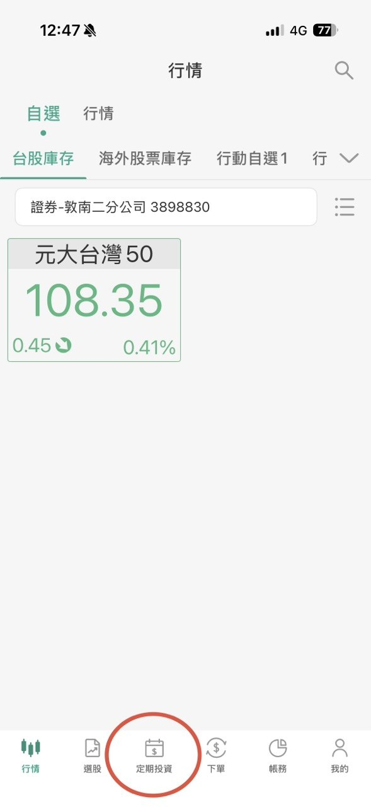
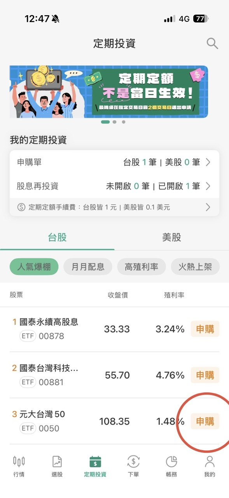
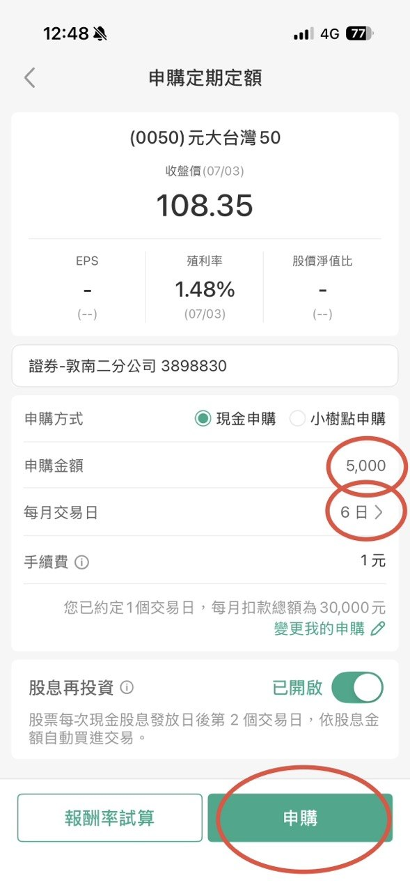
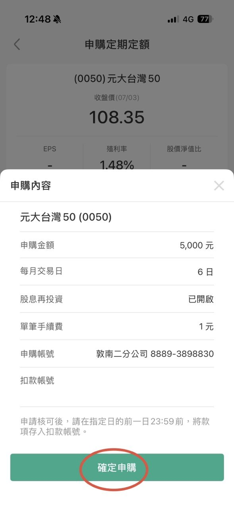
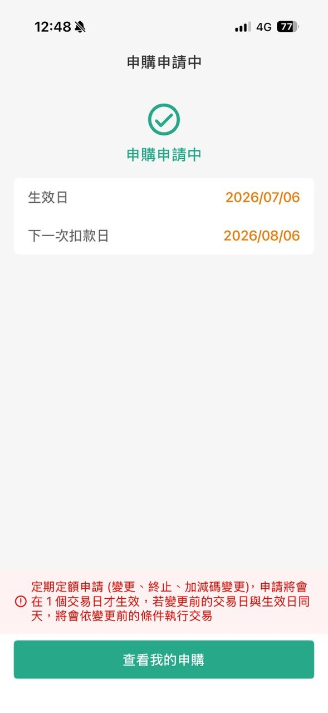

新手必看懶人包
趕時間？這裡將手冊的精華濃縮成四個最核心的問題，幫你快速搞懂。
什麼是 ETF？
它就像一盤「綜合水果盤」。你只要花少少的錢買一口，就等於同時吃到了全市場最賺錢、最頂尖的幾十家大公司股票，不用自己挑到眼花。
該選定存還是 ETF？
定存是「保本防禦」工具，確保資金絕對安全；大盤型 ETF 是「資產進攻」工具，共享經濟成長。兩者並非對立，而是需要依據個人需求靈活搭配。
新手該買哪一檔？
不用瞎猜！台股常見的穩健選擇是追蹤全台前 50 大企業的 0050（元大台灣50）；美股則是佈局美國 500 強巨頭的 VOO（Vanguard標普500）。
要怎麼買？
極其簡單。線上開立好證券戶並綁定好銀行帳戶，直接設定「每月定期定額」自動扣款買進，接著專注於本業與安心享受生活。
400 年來的財富革命
股票成功的將「個人的冒險資本」轉化為「集體的社會財富」，了解它才能理解為何股市長線向上。
大航海時代：香料狂熱與風險分攤的誕生
海上冒險面臨沉船和海盜等極高風險。1602年荷蘭成立「東印度公司」(VOC)，發行股份憑證招募國民資金，開創「有限責任」與「利益共享」機制。1611年阿姆斯特丹建立第一家證交所滿足交易變現需求。
投機泡沫破裂與法規的洗禮
1720 年「南海泡沫」引發空前投機狂熱，連科學家牛頓也認賠並感嘆無法計算人類的瘋狂。法規《泡沫法案》隨之誕生以約束公司。1792 年華爾街「梧桐樹協議」簽署，工業革命建設（鐵路、採礦）使股市蓬勃發展。
現代公正監管與指數投資革命
1929 年大蕭條後，美國於 1934 年成立證券交易委員會 (SEC) 實施嚴格的資訊揭露。1976 年先鋒集團約翰·柏格推出世界首檔 S&P 500 指數基金，提倡「買下整個市場」，開啟現代化全民長線指數化投資。
編輯核心心法
股票的本質從未改變 —— 它是企業家募集資金的工具，也是一般人共享社會經濟進步成果的橋樑。只要人類科技與文明在進步，代表頂尖企業集合的大盤，長線趨勢就會持續上升。
在開始買賣之前，我們必須先知道「股票」是怎麼來的。股票的誕生是人類金融史上最偉大的創新之一，它成功將「個人的冒險資本」轉化為「集體的社會財富」。
1. 股票的起源：大航海時代與海上冒險（15-17世紀）
在 16 世紀末，歐洲掀起了前往亞洲尋找香料（胡椒、肉桂）的狂熱。當時一艘商船只要能平安返航，帶回的香料就能獲得數倍暴利。
- 痛點：海上航行面臨風暴、海盜等極高風險，「船沉了，商人就破產了」。且建造大船需龐大資金，單一商人難以負擔。
- 世界第一家股份公司（1602年）：荷蘭人創立了「荷蘭東印度公司」（VOC），向全荷蘭國民募集資金，發行紙質的「股份憑證」。這開創了「有限責任」與「利益共享」機制 —— 船沉了，投資人最多損失買股票的錢；成功返航，則依持股比例分紅。
- 世界第一家證券交易所（1611年）：股票發行後，投資人有變現需求。荷蘭阿姆斯特丹成立了世界第一家證券交易所，股票開始有了「市場價格」並允許自由轉讓。
2. 投機泡沫與法規誕生（18-19世紀）
- 南海與密西西比泡沫（1720年）：英國與法國的公司利用貿易壟斷權瘋狂吹捧獲利前景，引發投機狂熱。連科學家牛頓也參與其中並留下名言：「我能計算天體的運行，卻無法計算人類的瘋狂。」隨後英國通過《泡沫法案》嚴格限制公司成立，股市沉寂百年。
- 工業革命與華爾街崛起：1792 年，24 名經紀人在紐約華爾街簽署「梧桐樹協議」，成為紐約證券交易所（NYSE）前身。19 世紀造鐵路、採礦的龐大資金需求，讓華爾街正式成為全球金融中心。
3. 現代股市建立與全民大航海時代（20世紀至今）
- 1929年大蕭條與監管：股市過度槓桿引發大崩盤後，美國在 1934 年成立證券交易委員會（SEC），實施嚴格的資訊揭露制度，奠定「公平、公正、公開」基石。
- 電子化與指數化：1971 年納斯達克（NASDAQ）成立；1976 年先鋒集團（Vanguard）創辦人約翰·柏格推出世界第一檔追蹤 S&P 500 的指數基金，提倡「買下整個市場」，改變了長線投資觀念。
股票的本質從未改變 —— 它是企業家募集資金的工具，也是一般人共享社會經濟進步成果的橋樑。只要人類科技與文明在進步，代表頂尖企業集合的大盤，長線趨勢就會持續上升。
買股票到底是在買什麼？
買股票就像跟朋友合資開雞排店。你出資 10 萬元，朋友給你 10% 股份憑證，大賺時分紅。你不用會做生意，頂尖企業會幫你賺錢。
💡 3 個新手最常混淆的觀念
你買股票的錢，是給公司嗎？
IPO/增資時： 資金直接流入公司帳戶用於營運。
一般股市交易： 你買的股票是其他投資人的「舊股票」，錢是流向「賣方」口袋，企業這時一毛錢也拿不到。
利息 vs. 股利
利息 (Interest)： 借錢給銀行或買債券，不論賺賠公司都必須固定支付給你的代價。
股利 (Dividend)： 你是公司股東，大賺時分享紅利；如果虧錢，公司可以決定不發股利。
📈 實戰解析：iPhone 推出時，金流如何流動？
| 參與角色 | 動作 | 現金流向 | 股票/資產變動 |
|---|---|---|---|
| 消費者 | 購買新手機 | 💸 流向 Apple 與台灣供應鏈 | ❌ 無股票變動 |
| 投資人/機構 | 看好新機前景 | 💸 流向證券市場（買方） | 📈 資金推升市場整體估值 |
| Apple 企業 | 賺取手機利潤 | 💸 支付供應鏈、發股利、買庫藏股 | 📉 市面流通股數減少（股票內在價值變高） |
| 長線投資人/ETF | 持續長期持有 | 💰 獲得股利分配或資產淨值增長 | 🔄 與企業共享長期的獲利與成長成果 |
邏輯修正提醒
股價反映的是企業長期的價值成長。長線投資人（包含大盤型 ETF 持有者）並非在玩「低買高賣、尋找接盤俠」的零和遊戲，而是透過持續持有，與全球頂尖企業共享長期營運所帶來的利潤與資產增值。
你可以把買股票想像成「跟朋友合資開雞排店」。你出資 10 萬元，朋友給你一張收據，寫著你擁有這家店 10% 的股份。月底結帳淨賺 5 萬元，朋友依據 10% 股份分給你 5,000 元。這就是股票最迷人的地方：你不需要懂怎麼做生意，只要購買股票成為微型股東，全球頂尖菁英就會幫你賺錢。
很多新手常混淆幾個觀念，我們一次釐清：
1. 觀念澄清：你買股票的錢，真的是給公司嗎？
- 初次上市（IPO）或增資：只有在這時候，投資人掏出的現金才會直接流進企業的銀行帳戶，企業因此獲得發展資金。
- 一般股市交易（次級市場）：你現在天天在 App 上買的 Apple (AAPL) 或台積電 (2330) 股票，其實是「其他投資人」手上持有的舊股票。你買股票的錢是流進「賣方」口袋，企業這時一毛錢也拿不到。
2. 觀念澄清：利息 vs. 股利
- 利息（Interest）：你把錢借給銀行或買債券，不論企業今年賺不賺錢，都必須固定支付給你的代價。
- 股利（Dividend）：你身為「公司股東」，公司今年大賺錢後分享給你的紅利（配息/配股）。如果虧錢，公司可以決定不發股利。
3. 實戰解析：iPhone 推出時，現金與股票如何流動？
當 Apple 宣布推出新款 iPhone 時，不僅是消費者買手機，更是一場龐大的跨國金錢流動：（詳細對照見上方表格）
邏輯修正提醒： 股價反映的是企業長期的價值成長。長線投資人（包含大盤型 ETF 持有者）並非在玩「低買高賣、尋找接盤俠」的零和遊戲，而是透過持續持有，與全球頂尖企業共享長期營運所帶來的利潤與資產增值。
理性的資產配置與風險認知
沒有完美的工具，只有最適合當下情境的配置。定存與 ETF 各司其職，盲目全押某方是不理智的。
⚖️ 銀行定存 vs. 大盤型 ETF 客觀比較
銀行定存
資產保本防禦- 資產保本、防禦風險、隨時動用
- 固定利息（約 1% ~ 2% 波動極小）
- 購買力被通膨侵蝕（慢性資產縮水）
- 極快（隨時解約即可現領）
- 極低（看得到資產本金不變）
大盤型 ETF
資產增值進攻- 資產增值、對抗通膨、參與經濟成長
- 浮動報酬（長期年化歷史平均約 7% ~ 10%）
- 短期市場波動劇烈，可能面臨帳面虧損
- 快（股市交易賣出後需等兩個交易日撥款）
- 中至高（需忍受市場上下起伏的帳面變動）
🚨 哪些情況下，你「必須」優先考慮定存？
1. 緊急預備金
建議準備 3 到 6 個月的生活費放定存。當遇失業或急需現金時，能隨時動用，不需被迫在股災時割肉賣股票。
2. 短期需動用的資金
預計 1 到 3 年內要支付的買房頭期款、結婚基金、學費等，絕不能承受任何短期虧損風險，務必放定存。
3. 保守的理財心態
投資因人而異。若股市下跌 10% 會讓你無比焦慮、影響生活，那麼定存提供的本金安全感對你而言就是無價的。
ETF 的市場波動風險提示
雖然大盤型 ETF 長期回報優異，但短期內（如一到兩年內）仍有下跌 20% 甚至 30% 以上的風險（例如：2008年金融海嘯、2022年全球央行激烈升息年）。投入 ETF 的資金必須是「短期內用不到的閒錢」，並做好長期持有抗戰的準備。
🏢 深入底層：ETF 發行商的 3 大獲利模式
發行商（如元大、Vanguard）是「開賭場的服務提供者」而非「賭客」，獲利追求的是規模經濟與旱澇保收：
1. 內扣管理費
最主要收入。從 ETF 淨值中每天微幅扣除。大盤漲、規模變大時管理費暴增；大盤大跌時依然照收，旱澇保收。
2. 證券借貸收入
發行商手裡持有龐大的企業股票，依法將這些現股借給做空機構，並從中收取穩定的借券利息，賺取額外營收。
3. 換股交易回饋
當 ETF 定期調整成分股時，因交易規模極其龐大，與合作券商之間會產生可觀的手續費折讓、分潤與回饋。
在理財的世界裡，沒有最完美的工具，只有最適合當下情境的配置。定存與 ETF 各司其職，盲目地將資金全數投入任何一方都是不理智的。
1. 銀行定存 vs. 大盤型 ETF 客觀比較
（詳細項目的比較，請參閱上方雙色對稱比較卡片資訊）
2. 哪些情況下，你「必須」優先考慮定存？
這篇教學並非 ETF 的瘋狂信徒推廣文，我們必須客觀承認定存的不可替代性。以下三種情況，你應優先選擇定存：
- 緊急預備金： 建議至少準備 3 到 6 個月的生活費放在定存。當遇到失業、意外生病或急需現金時，這筆錢能隨時動用，你不需要迫使自己在股市大跌時忍痛割肉賣股票。
- 短期即將動用的資金： 如果您預計在 1 到 3 年內要支付買房頭期款、結婚基金、買車或子女學費，這筆資金「絕對不能承受任何短期虧損風險」，務必放在定存。
- 無法承受帳面虧損的保守心態： 投資因人而異。如果股市下跌 10% 會讓您焦慮到無法入睡、嚴重影響生活品質，那麼定存提供的安定感對您而言就是無價的。
3. ETF 的市場波動風險提示
必須特別提醒新手：雖然大盤型 ETF 長期回報優異，但短期內（如一到兩年內）仍有下跌 20% 甚至 30% 以上的風險。（例如：2008 年金融海嘯、2022 年全球央行激烈升息年）。因此，投入 ETF 的資金必須是「短期內用不到的閒錢」，並做好長期抗戰的心理準備。
相關資訊參考來源：
4. 深入底層：ETF 發行商的 3 大獲利模式
很多人會問：「既然大盤長期看漲，為什麼發行商（如 Vanguard、元大）不把錢全拿去自己投資，而是要開一檔 ETF 幫別人管理？」因為他們是「開賭場的服務提供者」，不是「賭客」，他們的獲利模式追求的是規模經濟與旱澇保收：
- 內扣管理費： 這是發行商最主要的收入。這筆費用是從 ETF 淨值中每天微幅扣除（例如 VOO 每年扣 0.03%）。當大盤大漲，資產規模變大，收到的管理費會暴增；即便大盤大跌，發行商依然照常按比例收費，絕不會虧損。
- 證券借貸收入： 發行商手裡持有大量的企業現股，他們可以依法將這些股票借給市場上的做空機構，並從中收取借券利息，增加額外營收。
- 換股交易回饋： 當 ETF 定期調整成分股時，由於資金規模極其龐大，與合作券商之間會產生手續費折讓或分潤。
為什麼不把自有資金全部拿去賭股市？
* 開賭場比當賭客穩健： 自有資金投資大盤若遇股災會面臨虧損；而當發行商，股災時僅是管理費少收，公司依然穩健營運。
* 需要穩定的營運現金流： 發行商需支付經理人薪資、全球合規律師費、IT 系統維護。若資金全套在股市，遇到金融海嘯可能引發流動性危機。
* 法規的嚴格限制： 全球金融監管機構（如台灣金管會、美國 SEC）對金融機構 of 自有資金投資上限有極嚴格的限制，強制要求其持有大量低風險資產（如美國國債），絕不允許全倉押注股市。
新手必知的三大主流標的
老老實實買進參與經濟成長的大盤指數標的，是勝率最高的策略。請移動游標體驗 3D 卡片效果。
元大台灣50 (0050)
- 追蹤市場 台灣股市市值前 50 大的頂尖企業。
- 最大優點 一網打盡護國神山群，台幣扣款免換匯。
- 最大風險 台積電權重極高（常超 50%）受單一公司影響大。
Vanguard 標普500 (VOO)
- 追蹤市場 美國股市前 500 大大型頂尖巨頭。
- 最大優點 網羅全球最強五百大企業，極度分散且走勢穩健。
- 最大風險 需使用海外券商或複委託，有匯率波動風險。
Invesco 納斯達克100 (QQQ)
- 追蹤市場 美股納斯達克前 100 大非金融科技龍頭。
- 最大優點 科技 AI 爆發力強，歷史長線報酬率驚人。
- 最大風險 產業過度集中科技股，修正時波動與跌幅劇烈。
新手不要總想著一夕暴富炒短線，老老實實買進參與整體經濟成長的「大盤指數標的」，才是勝率最高的策略。
| ETF 代號與名稱 | 追蹤什麼市場 | 優點 | 缺點與風險 | 適合什麼樣的新手 |
|---|---|---|---|---|
| 元大台灣50 (0050) | 台灣股市市值前 50 大的頂尖企業。 | 一網打盡台灣最賺錢的護國神山群。簡單透明，完全與台灣經濟成長綁定。 | 台積電單一公司權重過高（常超過50%），受單一企業股價波動影響極大。 | 偏好在地投資、看好台灣半導體與科技高成長，且不想處理換匯的新手。 |
| Vanguard 標普500 (VOO) | 美國股市前 500 大頂尖大型企業。 | 網羅全球最強的 500 家巨頭，行業分散極度均勻，歷史長線走勢極為穩健。 | 需透過複委託或海外券商購買，存在匯率波動風險。 | 追求最穩健、最長線資產增值，希望將資產佈局在全球第一大經濟體的人。 |
| Invesco 納斯達克100 (QQQ) | 美國納斯達克上市的前 100 大非金融企業。 | 爆發力極強！集中全球最頂尖科技與 AI 龍頭，長線歷史回報率驚人。 | 產業高度集中於科技業，科技股波動劇烈，估值修正時（如空頭市場）跌幅顯著大於 VOO。 | 能承受較大心理帳面波動、極度看好全球科技與 AI 劇烈發展的新手。 |
邁出投資的第一步
懂了理論，不踏出第一步就永遠只是看熱鬧。以下我們將實戰演練分為「通用定期定額步驟」與「國泰證券 App 實戰（以 0050 為例）」兩部分，幫助你快速開始。
1. 通用定期定額步驟（各券商適用）
點選步驟卡片即可打勾標記進度，輔助自己一步步完成申購設定：
步驟 1. 開戶與綁定
選擇一家信譽良好的大型證券商（如富邦、元大、凱基等），準備好身分證與健保卡雙證件，利用線上 App 即可完成證券戶開立，並綁定交割銀行帳戶。
步驟 2. 資金準備（入金）
在約定扣款日之前，將你每個月預計投資的閒錢（例如：3,000 元或 5,000 元，務必是短期內用不到的錢）轉帳存入你的銀行交割帳戶中。
步驟 3. 尋找定期定額功能專區
打開你的證券商 App，在主要功能選單中點選「台股」或「美股」標籤，接著在畫面中找到「定期定額」或「存股/自動投資」功能入口。
步驟 4. 搜尋你想買的 ETF 標的
在搜尋欄位直接輸入你想購買的代號（例如：台股定期定額搜尋 `0050`，美股定期定額搜尋 `VOO`），點選該標的進入申購畫面。
步驟 5. 設定扣款金額與日期
輸入你每個月打算投資的金額（台股最低只要 100 元），並勾選每個月要自動扣款的日期（例如每月的 8 號、18 號或 28 號，可複選以分散天數）。
步驟 6. 確認並送出申購
仔細檢查扣款金額、扣款日期與 ETF 代號無誤後，按下「確認申購」，並輸入交易密碼。恭喜你，你的自動財富增值計劃正式啟動！
步驟 7. 選擇扣款幣別 美股專屬
若申購美股 ETF，可選擇「台幣扣款」（交由券商自動以當下匯率換匯，最省心），或選擇「外幣扣款」（平時趁匯率低點自行換好美元存入外幣交割帳戶）。
2. 國泰證券 App 實戰（以 0050 為例）
國泰證券是目前台灣定期定額非常熱門的選擇，台股定期定額買進手續費享有均一價 1 元 的優惠（優惠已確認延長至 2026 年 12 月 31 日）。以下為在「國泰證券 App」進行定期定額的詳細圖文實戰步驟，點擊圖片可放大檢視：
進入定期投資專區
打開並登入「國泰證券 App」，在首頁快捷功能或下方選單中，點選「定期投資」圖示進入存股專區。

搜尋並點選申購標的
在定期投資專區內，點選「申購設定」，選擇台股 0050。或者，切換「台股」或「美股」頁籤，在上方搜尋框輸入您想買的 ETF 代號（如台股 `0050` 或美股 `VOO`），點選該標的進入設定。

設定扣款金額與日期
輸入每期打算投資的金額（台股定期定額每筆最低 100 元起，以百元為單位累加；美股定期定額最低 10 美元起）。並利用「每月交易日」功能，勾選每月 1 號到 31 號之中的任一天或數天作為扣款日。

確認申購內容
仔細確認您的 ETF 代號、約定扣款日、金額與手續費（台股買進定期定額手續費為 1 元）無誤後，輸入您的交易密碼，按下「確認申購」即送出申請。

申請中畫面與扣款準備
等後續申請成功後，務必於扣款日前一天 23:59 前，將足夠的扣款金額存入您綁定的國泰世華銀行交割帳戶中。

最後的叮嚀
投資市場上最終的贏家，往往不是最聰明、最會預測高低點的人，而是最能堅持紀律、在波動中依然不中斷扣款的人。定期定額、長線持有，讓時間與複利成為你最好的朋友。
懂了理論，不踏出第一步就永遠只是看熱鬧。以下教你如何用最省力的「定期定額」買進人生第一筆 ETF：
- 開戶與綁定： 選擇一家信譽良好的大型證券商（如國泰、富邦、元大等），準備好雙證件在線上 APP 即可完成證券戶開立，並綁定好銀行帳戶作為未來的扣款交割戶。
- 資金準備（入金）： 在設定的扣款日之前，將你每個月預計投資的閒錢（例如：3,000 元或 5,000 元，務必是短期內用不到的錢）轉帳存入你的銀行交割帳戶中。
- 尋找定期定額功能專區： 打開證券商 APP，點選功能選單中的「台股」或「美股」標籤，接著在畫面中找到「定期定額」或「自動投資」的功能入口。
- 搜尋你想買的 ETF 標的： 在搜尋欄位直接輸入你想購買的代號（例如：台股輸入 0050，美股輸入 VOO），點選該標的進入申購畫面。
- 設定扣款金額與日期： 輸入你每個月打算投資的金額（目前許多券商台股定期定額最低只要 100 元），並勾選每個月要自動扣款的日期（例如每月的 8 號、18 號或 28 號，可複選以分散天數）。
- 確認並送出申購： 仔細檢查扣款金額、日期與 ETF 代號無誤後，按下「確認申購」，並輸入交易密碼。恭喜你，你的專屬自動財富增值計劃正式啟動了！
- (美股專屬) 選擇扣款幣別： 若申購美股 ETF，系統會讓你選擇「台幣」或「外幣」扣款。想追求極致省力，可選「台幣扣款」，交由券商自動依當下匯率換匯；若想精打細算，則可選「外幣扣款」，平時趁匯率低點自行換好美元存入外幣交割帳戶中。
最後的叮嚀： 投資市場上最終的贏家，往往不是最聰明、最會預測高低點的人，而是最能堅持紀律、在波動中依然不中斷扣款的人。定期定額、長線持有，讓時間成為你最好的朋友。
想了解更多？這四個資源值得收藏
精選官方與第三方指標性內容，助你建立更完整的理財防禦與長線投資思維。